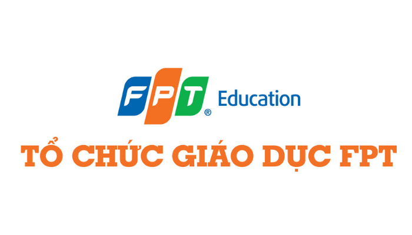

Im currently learning and praticing to become an software enginner at FPT university.Here are some information that you could read about the school studying at.
First , the FPT education: Established in 1999, after 18 years of establishment - construction - development, FPT Education has become a major education system in Vietnam, including high school, college, university education systems, Post-graduate, vocational training, training for the business sector... and incubation projects. Currently, the Division has reached a scale of more than 1,000 staff, lecturers and nearly 20,000 pupils, students and trainees in all training systems. With the orientation of iGSM - [Industry Relevant - Global - Smart Education - Mega], FPT Education hopes to bring Vietnamese education to the regional and world competition. The goal is to have 150,000 students by 2020, of which foreign students account for 15%. The mission of FPT Education (FPT Education) is to provide learners with global competitiveness, contributing to the expansion of the country's intellectual frontiers. The difference of FPT Education is innovation, training in the form of close association with IT enterprises, linking training with practice, with research - implementation and the most modern technologies. .

FPT University was established on September 8, 2006 under the Prime Minister's Decision No. 208/2006/QD-TTg and operates under the Regulation on organization and operation of a private university under Decision No. 61. /2009/QD-TTg issued on 17/4/2009 by the Government.
FPT University's mission is to train high-quality human resources in the integration period, provide learners with global competitiveness, and contribute to expanding the country's intellectual frontiers. The difference in training methods of FPT University is close association with businesses, training according to international technology standards, proficiency in two foreign languages, soft skills training, and focus on human development. comprehensive and harmonious.
The immediate goal of FPT University is to train and provide high-quality human resources majoring in IT, Economics, Fine Arts and other industries for domestic enterprises as well as world corporations.
P98% of graduates have jobs with an average salary of 8.3 million VND; 19% of alumni work abroad; 100% of students have the opportunity to work at FPT Corporation.
Awards: Victa Award (ICT Award) in 2008, 2010 with the title of the best IT human resource training service provider. ''' Sao Khue Award''' for 9 consecutive years from 2006-2015 - In which, for five consecutive years (2011-2015), FPT University won an impressive double in the Sao Khue Award with the following categories: for the Formal IT Training Unit and the Excellent Non-formal IT Training Unit. First prize in ACM/ICPC Vietnam International Programmer Competition (2012)
Top 10 ACM/ICPC Asia (2011 - 2012)
First prize in IT Corner contest organized by Hanoi National University (2012)
Second Prize in Samsung Programming Contest (2011)
Second prize of Imagine Cup competition organized by Microsoft (2011).
Certificate of Merit from the Ministry of Education and Training for the unit with the best results in the student computer exam 2012.
Certificate of Merit from the Ministry of Science and Technology to the FSB Institute of Management and Technology, belonging to FPT University, which has many excellent achievements in research and training (September 2014)
Second prize at ACM/ICPC Asia Hanoi arena held (2015).
First prize at the Vietnam Student League of Legends E-Sports Tournament (2019).